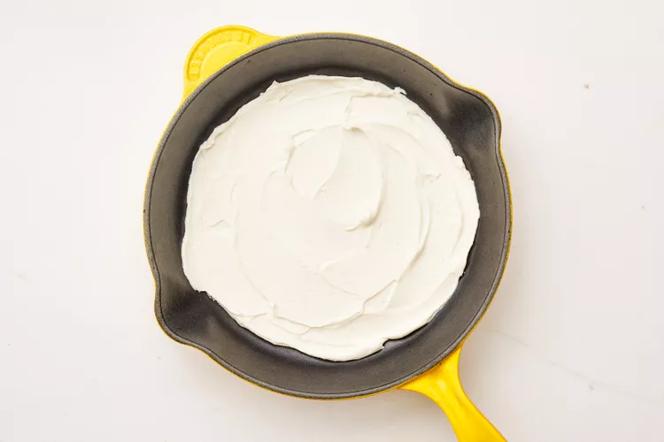
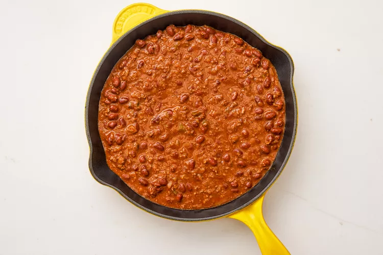
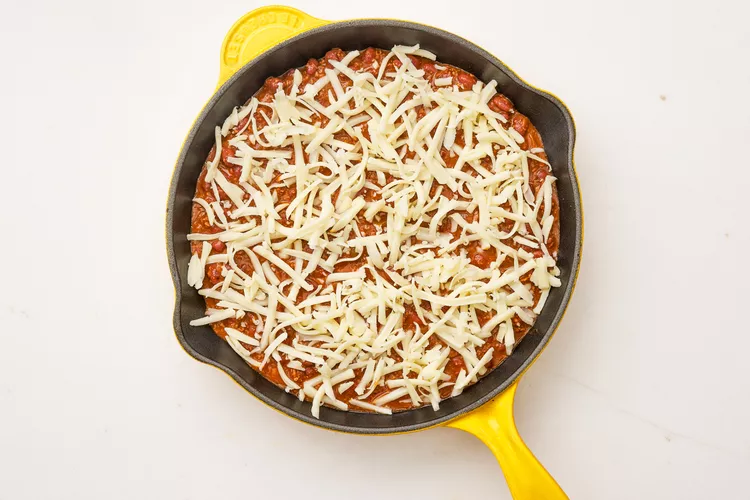

| 4 ounces cream cheese, softened 1/4 cup sour cream, divided 1 teaspoon onion powder 2 (15-ounce) cans chili (such as Amy’s Kitchen), about 3 cups 4 ounces shredded Monterey Jack cheese (about 1 cup) 2 cups (4 ounces) lightly crushed corn chip scoops (such as Fritos Scoops), plus more for serving 1 small plum tomato, chopped 1/4 cup chopped fresh cilantro 1 green onion, sliced 1 teaspoon finely grated lime zest (from 1 lime), plus wedges for serving |
|  |  |  | ||
| Step-1. Preheat the oven to 350°F. |
Step-2. Mix the cream cheese, 2 tablespoons of sour cream, and onion powder in a small bowl until blended. Spread across the bottom of a 10-inch oven-safe skillet, deep-dish pie plate, or 2-quart baking dish. |
Step-3. Evenly spread the chili over the cream cheese layer and sprinkle with cheese. |
|---|
 |
| Step-4. Bake until the cheese is melted, about 30 minutes. While the dip bakes, prepare the toppings. Before serving the dip, top with crushed corn chips, tomato, cilantro, green onions, and lime zest. Dollop the remaining 2 tablespoons of sour cream on top and serve with corn chip scoops. |
|---|